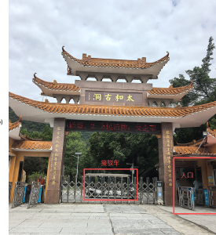

10 月 1 日 · 周四
01抵达广州，开往清远
- 12:45–15:10宁波飞广州抵达广州白云国际机场。
- 约 16:30白云机场 T2 取车核对车况与油量，再开往清远，预计约 1.5 小时。
- 傍晚入住有居民宿到太和古洞停车场后，按民宿安排换乘接驳车。
- 晚餐清远鸡 + 北江河鲜第一天不再赶景点，早点休息。
2026 National Day
从清远的山水慢下来，再回广州逛街吃饭。7 天路线、住宿与地图入口都放在这一页。

7-day plan
按已订机票、租车和住宿整理；所有地点按钮均可跳转高德地图。
Confirmed
以原始订单截图为准；出发前再在订单 App 内核对航班、房型和门店。
Guangzhou food
Alternative
Before leaving
References